2. MCH distribution#
Part of the Fig. 3 chapter — see it for the panel-by-panel map. The first code cell sets ENTEX_ROOT and activates the no-overwrite guard (see the Reproduction guide). Outputs shown are the author’s original run.
📥 Required input files#
This notebook reads the following files (paths resolve from ENTEX_ROOT/REF_ROOT; the setup cell sets them). See the chapter’s inputs.md for RAW-vs-derived tags.
f'{REF_ROOT}/hg38/gencode/v30/gencode.v30.annotation.gene.flat.tsv.gz'· ref: gencodef'{indir}L1color.tsv'· metadata: colorf'{indir}scRNA/pseudobulk/L1/L1.hdf'· scRNA/exprf'{indir}clustering/merged/5kCG100k3C_summary.h5ad'· joint summary objf'mCH_distribution/multires/{ct}_hist.npy'· otherf'{indir}clustering/merged/group_meta.tsv'· metadataf'{indir}merged_allc/cluster_donor.mcds'· sc/pseudobulk mC (allc)'mCH_distribution/cluster420_chrom1k_mCH.hdf'· other'mCH_distribution/cluster420_global_mCH.tsv.gz'· tablef'mCH_distribution/multires/{ct}_corr_{num2str(reslist[-1])}.npy'· otherf'mCH_distribution/multires/{ct}_corr_{num2str(res)}.npy'· otherf'mCH_distribution/multires/{ct.replace(" ","-").replace("/","_")}_corr_{num2str(res)}.npy'· otherf'mCH_distribution/multires/{ctname}_corr_{num2str(res)}.npy'· other
# === Reproduction setup — edit ENTEX_ROOT / REF_ROOT for your machine ===
import os, sys
ENTEX_ROOT = os.environ.get('ENTEX_ROOT', '/large_storage/zhoulab/zhoujt/project/ENTEx')
REF_ROOT = os.environ.get('REF_ROOT', '/large_storage/zhoulab/ref')
BOOK_ROOT = os.environ.get('BOOK_ROOT', f'{ENTEX_ROOT}/analysis/HumanCellEpigenomeAtlas')
sys.path.insert(0, BOOK_ROOT)
os.chdir(f'{ENTEX_ROOT}/analysis') # original working directory
import repro_guard # no-overwrite guard (default: skip existing)
import numpy as np
import pandas as pd
import seaborn as sns
import matplotlib as mpl
import matplotlib.pyplot as plt
from glob import glob
from scipy.sparse import csr_matrix
from scipy.stats import pearsonr, spearmanr
from concurrent.futures import ProcessPoolExecutor, as_completed
import pysam
import seaborn as sns
import anndata
import scanpy as sc
import scanpy.external as sce
from sklearn.preprocessing import normalize
from sklearn.metrics import pairwise_distances, roc_auc_score
mpl.style.use('default')
mpl.rcParams['pdf.fonttype'] = 42
mpl.rcParams['ps.fonttype'] = 42
mpl.rcParams['font.family'] = 'sans-serif'
mpl.rcParams['font.sans-serif'] = 'Helvetica'
import warnings
warnings.filterwarnings("ignore")
indir = f'{ENTEX_ROOT}/'
gene_meta = pd.read_csv(f'{REF_ROOT}/hg38/gencode/v30/gencode.v30.annotation.gene.flat.tsv.gz', sep='\t', header=0)
# gene_meta = gene_meta.loc[gene_meta['chrom'].isin(chrom_sizes.index)]
gene_meta['gene_id_idx'] = gene_meta['gene_id'].str.split('.').str[0]
ens2gene = gene_meta.set_index('gene_id_idx')['gene_name'].to_dict()
gene2ens = gene_meta.set_index('gene_name')['gene_id_idx'].to_dict()
L1_meta = pd.read_csv(f'{indir}L1color.tsv', sep='\t', header=0, index_col=0)
L1_meta = L1_meta.drop(['c35','c36'], axis=0)
L1_annot = L1_meta['L1_abbr'].to_dict()
L1_color = L1_meta['color'].to_dict()
# annot_L1 = L1_meta.reset_index().set_index('L1_abbr')['L1'].to_dict()
# L1_annot['c35'] = 'Hema Bnaive'
# L1_annot['c7'] = 'Hema Bmem'
# L1_color['c35'] = L1_color['c7']
L1_color.update({L1_annot[k]: L1_color[k] for k in L1_annot if k in L1_color}) # also key by name
expr = pd.read_hdf(f'{indir}scRNA/pseudobulk/L1/L1.hdf', key='data')
# expr.columns = expr.columns.map(annot_L1)
expr = np.log1p(expr)
meta = anndata.read_h5ad(f'{indir}clustering/merged/5kCG100k3C_summary.h5ad').obs
meta.columns
Index(['FinalmCReads', 'mCHFrac', 'mCGFrac', 'CisLongContact', 'Cis/Trans',
'Donor', 'Tissue', 'celltype', 'ClusterTissue', 'tsne_0', 'tsne_1',
'leiden_cons', 'leiden_cv', 'leiden_init', 'batch', 'L1_annot', 'L1',
'L2', 'L2_any', 'L2_both', 'L2_mc', 'L2_3c', 'tissue_annot', 'group',
'cluster', 'Short/Long', 'mcg_L2', 'hic_L2', 'L2_final'],
dtype='object')
# meta['L1'] = meta['L1'].astype(str)
# meta.loc[(meta['L1']=='c7') & meta['L2_any'].isin(['c0','c10','c11']), 'L1'] = 'c35'
donor_palette = {xx:yy for xx,yy in zip(meta['Donor'].unique(), sns.color_palette('tab20', 20))}
# meta = anndata.read_h5ad(f'{indir}clustering/merged/5kCG100k3C_summary.h5ad').obs
meta['L2'] = meta['L1'].astype(str) + '-' + meta['L2_any'].astype(str)
L2_list = meta.groupby('L2')['mCHFrac'].median().sort_values().index
# L1_annot = meta.set_index('L1')['L1_annot'].to_dict()
meta[['L1','L1_annot']] = meta[['L1','L1_annot']].astype(str)
meta['L1_annot'] = meta['L1'].map(L1_annot)
# meta.loc[(meta['L1']=='c7') & meta['L2_any'].isin(['c0','c10','c11']), 'L1_annot'] = 'Hema Bnaive'
# meta.loc[(meta['L1']=='c7') & ~meta['L2_any'].isin(['c0','c10','c11']), 'L1_annot'] = 'Hema Bmem'
# meta.loc[(meta['L1']=='c7') & meta['L2_any'].isin(['c0','c10','c11']), 'L1'] = 'c35'
donor_palette = {xx:yy for xx,yy in zip(meta['Donor'].unique(), sns.color_palette('tab20', 20))}
# colors = pd.read_csv(f'{indir}L1color.tsv', sep='\t', header=0, index_col=0)['color'].to_dict()
# colors['c35'] = colors['c7']
colors = L1_meta.set_index('L1_abbr')['color'].to_dict()
colors.update(L1_meta['color'].to_dict()) # also key by c-code so hue='L1' works too
L1_list = meta.groupby('L1_annot')['mCHFrac'].median().sort_values().index
fig, ax = plt.subplots(figsize=(8,3), dpi=300)
sns.boxplot(data=meta.loc[~meta['L1'].isin(['c10','c16'])], x='L1_annot', y='mCHFrac', hue='L1', ax=ax,
palette=colors, order=L1_list[:-2], showfliers=False)
ax.set_xticklabels(ax.get_xticklabels(), fontsize=12, rotation=90)
# ax.set_yticklabels(ax.get_yticklabels(), fontsize=12)
ax.set_ylabel('mCH/CH', fontsize=12)
ax.get_legend().set_visible(False)
ax.set_yticks(np.arange(0.005, 0.03, 0.01))
ax.set_ylim([0.003, 0.03])
fig.tight_layout()
fig.savefig('mCH_distribution/L1_cellglobalCH_box.pdf', transparent=True)

fig, axes = plt.subplots(1, 2, figsize=(9, 3), gridspec_kw={'width_ratios': [17,1]}, dpi=300)
selneu = meta['L1'].isin(['c10','c16'])
ax = axes[0]
sns.boxplot(data=meta.loc[~selneu], x='L1_annot', y='mCHFrac', hue='L1_annot', ax=ax,
palette=colors, order=L1_list[:-2], showfliers=False)
ax.set_xticklabels(ax.get_xticklabels(), fontsize=12, rotation=90)
# ax.set_yticklabels(ax.get_yticklabels(), fontsize=12)
ax.set_ylabel('mCH/CH', fontsize=12)
# ax.get_legend().set_visible(False)
ax.set_yticks(np.arange(0.005, 0.03, 0.01))
# ax.set_ylim([0.003, 0.03])
ax = axes[1]
sns.boxplot(data=meta.loc[selneu], x='L1_annot', y='mCHFrac', hue='L1_annot', ax=ax,
palette=colors, order=L1_list[-2:], showfliers=False)
ax.set_xticklabels(ax.get_xticklabels(), fontsize=12, rotation=90)
# ax.set_yticklabels(ax.get_yticklabels(), fontsize=12)
ax.set_ylabel('')
# ax.get_legend().set_visible(False)
ax.set_yticks(np.arange(0, 0.11, 0.025))
ax.set_ylim([0.003, 0.115])
ax.tick_params(axis='y', right=True, left=False, labelright=True, labelleft=False)
fig.tight_layout()
fig.savefig('mCH_distribution/L1_cellglobalCH_box.pdf', transparent=True)

mch = meta.groupby('L1_annot')['mCHFrac'].median().sort_values()
from scipy.stats import pearsonr, spearmanr
# tmp = expr.drop(['Neu Exc', 'Neu Inh'], axis=1)
tmp = expr.copy()
yy = mch.loc[tmp.columns].values
scorr = pd.Series([spearmanr(xx,yy)[0] for xx in tmp.values],
index=tmp.index.map(ens2gene)).dropna()
scorr.sort_values().iloc[:100].index
Index(['ERO1A', 'AC105020.1', 'AL590327.1', 'CCDC9', 'FO681492.1', 'PGGHG',
'FAAP100', 'SIK1', 'SCGB1D2', 'PKN3', 'DDX42', 'AC003101.2', 'NKILA',
'AC006027.1', 'SNIP1', 'TSG101', 'AL590226.2', 'NRM', 'AC093788.1',
'CASP4', 'SDCBP2', 'AC010329.1', 'KRTDAP', 'EVA1A', 'MBD2', 'TACSTD2',
'PRKD2', 'TLR5', 'MRE11', 'HNRNPH1', 'STT3A', 'CWC25', 'SRP54', 'OCLN',
'MARF1', 'SLC12A9', 'TRIB3', 'SH3TC1', 'TM4SF1', 'IRX1', 'TRIM27',
'AF178030.1', 'GALK1', 'KLK11', 'LINC01238', 'IQCN', 'LSG1', 'RHBDF2',
'EIF3B', 'AP002956.1', 'MICALL1', 'SRP68', 'AL135999.1', 'WDR45B',
'CGB7', 'TEPSIN', 'SAP30BP', 'DUSP4', 'NCBP3', 'JAG1', 'CMTM7', 'SYT8',
'NSMCE4A', 'FRMD8', 'ZNF267', 'KRT7', 'FAM86C1', 'CD44', 'TNIP1',
'AL590235.1', 'ANXA5', 'EXOC3', 'C15orf39', 'EHD4', 'C20orf204',
'AL118508.1', 'NEDD1', 'PPCDC', 'LINC02066', 'AL135937.1', 'MPZL2',
'AC108134.2', 'ACLY', 'KLF6', 'SIK1B', 'SLC12A7', 'AC138207.7',
'DIPK1B', 'CPSF1', 'STC1', 'AC006486.1', 'NUDT17', 'NRBP1', 'LINC00960',
'PARP12', 'EIF5B', 'FAM234B', 'SPINT1-AS1', 'RELB', 'ELMO3'],
dtype='object')
scorr.sort_values()
ERO1A -0.738920
AC105020.1 -0.727342
AL590327.1 -0.726895
CCDC9 -0.723596
FO681492.1 -0.723469
...
PPIAP33 0.564673
NaN 0.565852
TMEM132E 0.570378
OR6T1 0.573648
CDK5R1 0.587567
Length: 43003, dtype: float64
tmp = expr.drop(['Neu Exc', 'Neu Inh'], axis=1)
pcorr = pairwise_distances(mch.loc[tmp.columns].values[None, :], tmp, metric='correlation')
pcorr = pd.Series(1-pcorr[0], index=tmp.index.map(ens2gene)).dropna()
pcorr.sort_values().iloc[:100].index
Index(['NCBP3', 'ERO1A', 'ELOA', 'CASP4', 'NKAPD1', 'PABPN1', 'SELENOF',
'MESD', 'KYAT3', 'EBLN3P', 'NEPRO', 'MRE11', 'GCN1', 'RETREG3', 'TOX4',
'RXYLT1', 'MMP24OS', 'PPP4R3A', 'SRPRA', 'NSD3', 'STN1', 'AC026470.1',
'BMI1', 'MMUT', 'LUC7L2', 'PPP4R3B', 'WAPL', 'KHDC4', 'TUT7', 'ODR4',
'EEF1AKNMT', 'FAAP100', 'MARF1', 'SINHCAF', 'MAIP1', 'OGA', 'TEPSIN',
'ENTR1', 'ATP5F1C', 'JPT2', 'REX1BD', 'KMT5A', 'RTF2', 'NAXD', 'WASHC4',
'SEM1', 'AC007950.1', 'NORAD', 'WASHC3', 'SELENOS', 'ZUP1', 'ELOC',
'TASOR', 'RO60', 'QTRT2', 'YJU2', 'NUP58', 'TENT4A', 'AL021368.2',
'INTS14', 'ILF3-DT', 'SNU13', 'CNOT9', 'TENT4B', 'MFSD14B', 'ATP5MC2',
'VIRMA', 'NDUFAF8', 'TRMO', 'UFD1', 'WASHC2A', 'SP100', 'THAP12',
'TTLL3', 'AC008755.1', 'TRIR', 'BUD23', 'PUM3', 'PTCD1', 'AC124319.1',
'SERF2', 'RCC1L', 'EIF3A', 'WASHC2C', 'FBH1', 'CIAO3', 'GCC1', 'PLPP5',
'WASHC5', 'CCDC32', 'CSKMT', 'KMT5B', 'DMAC2L', 'KXD1', 'HEXD', 'ERBIN',
'CARNMT1', 'ATP5ME', 'TAF7', 'ZNF28'],
dtype='object')
tmp = expr.T
tmp.columns = tmp.columns.map(ens2gene)
tmp['mCH'] = mch.copy()
tmp['color'] = colors.copy()
turnover_rate = {
"c33": 0.10, # Endo Lymphatic
"c3": 0.05, # Endo Vascular
"c22": 0.2, # Epi Acinar
"c9": 1.0, # Epi Adrenal
"c20": 0.3, # Epi Alveolar
"c25": 0.5, # Epi Breast Basal
"c30": 0.5, # Epi Ductal
"c13": 0.2, # Epi Endocrine
"c8": 30.0, # Epi Enteric
"c4": 12.0, # Epi Gastric
"c18": 18.0, # Epi Keratinous/Luminal
"c2": 50.0, # Epi Trophoblast
"c29": 0.2, # Fibro Adrenal
"c17": 0.2, # Fibro Breast
"c19": 0.1, # Fibro Endoneurial
"c28": 0.1, # Fibro Epineurial
"c6": 0.2, # Fibro Gastrointestinal
"c11": 0.1, # Fibro Heart
"c32": 0.2, # Fibro Muscular
"c34": 4.0, # Myofibroblast
"c23": 0.5, # Fibro Skin
"c31": 0.05, # Glia Astrocyte
"c14": 0.10, # Glia Oligodendrocyte
"c7": 4.0, # Hema B
"c24": 1.0, # Hema Mast
"c0": 50.0, # Hema Myeloid
"c27": 12.0, # Hema NK
"c1": 1.0, # Hema Tmem
"c15": 0.2, # Hema Tnaive
"c26": 0.01, # Mus Cardiac
"c5": 0.02, # Mus Skeletal
"c10": 0.0, # Neu Excitatory
"c16": 0.0, # Neu Inhibitory
"c21": 0.05, # Glia Schwann
"c12": 0.05, # Perivascular
}
turnover_rate = pd.Series(turnover_rate)
turnover_rate.index = turnover_rate.index.map(L1_annot)
tmp['turnover_rate'] = np.log1p(turnover_rate)
L1_list = L1_list.str.replace(' ', '-').str.replace('/', '_')
selch = np.array([xx[1]!='G' for xx in context_list])
result = {ct:np.load(f'mCH_distribution/multires/{ct}_hist.npy') for ct in L1_list}
data = pd.DataFrame([result[ct][0][selch].sum(axis=0) for ct in L1_list], index=L1_list)
# data = (data.T / data.sum(axis=1)) * 1e6
tmp = (data.T / data.sum(axis=1)).iloc[:100] * 1e6
group_meta = pd.read_csv(f'{indir}clustering/merged/group_meta.tsv', sep='\t', header=0, index_col=0)
# group_meta = group_meta[['L2_any', 'L1', 'count']]
group_meta['L1_annot'] = group_meta['L1_annot'].str.replace(' ','-').str.replace('/','_')
annot2L1 = group_meta[['L1','L1_annot']].set_index('L1_annot')['L1'].to_dict()
L1annot = group_meta[['L1','L1_annot']].set_index('L1')['L1_annot'].to_dict()
from ALLCools.mcds import MCDS
mcds = MCDS.open(f'{indir}merged_allc/cluster_donor.mcds', var_dim='chrom1k')
mcds
<xarray.MCDS> Size: 93GB
Dimensions: (cell: 940, chrom1k: 3088298, count_type: 2, mc_type: 4)
Coordinates:
* cell (cell) <U16 60kB 'c0-c0-PT-1JKYN' ... 'c9-c9-STL003'
* chrom1k (chrom1k) <U12 148MB 'chr1_0' 'chr1_1' ... 'chrY_57227'
chrom1k_chrom (chrom1k) <U5 62MB ...
chrom1k_end (chrom1k) int64 25MB ...
chrom1k_start (chrom1k) int64 25MB ...
* count_type (count_type) <U3 24B 'mc' 'cov'
* mc_type (mc_type) <U3 48B 'CAN' 'CCN' 'CGN' 'CTN'
Data variables:
chrom1k_da (cell, chrom1k, mc_type, count_type) uint32 93GB dask.array<chunksize=(1, 386038, 1, 1), meta=np.ndarray>
Attributes:
obs_dim: cell
var_dim: chrom1kmcds = mcds.assign_coords(L2_any=('cell', group_meta.loc[mcds.get_index('cell'), 'L2_any']))
mcds = mcds.groupby('L2_any').sum()
mcds = mcds.sel({'mc_type':['CAN','CCN','CTN']}).sum(dim='mc_type')
mcds = MCDS(mcds, obs_dim='L2_any', var_dim='chrom1k')
cov = mcds['chrom1k_da'].sel(count_type='cov').mean(dim='L2_any').squeeze().to_pandas()
cov.to_hdf('mCH_distribution/chrom1k_L2any_cov.hdf', key='data')
mcds = mcds.sel({'chrom1k':cov.index[cov>100]})
black_list_path = '/large_experiments/zhoulab/ref/blacklist/hg38-blacklist.v2.bed.gz'
mcds = mcds.remove_black_list_region(
black_list_path=black_list_path, f=0.5
)
exclude_chromosome = ['chrX', 'chrY', 'chrM', 'chrL']
mcds = mcds.remove_chromosome(exclude_chromosome)
52872 chrom1k features removed due to overlapping (bedtools intersect -f 0.5) with black list regions.
159777 chrom1k features in ['chrX', 'chrY', 'chrM', 'chrL'] removed.
global_cg = mcds['chrom1k_da'].sum(dim='chrom1k').to_pandas()
global_cg = global_cg['mc'] / global_cg['cov']
global_cg.to_csv('mCH_distribution/cluster420_global_mCH.tsv.gz', sep='\t', header=None)
mcds.add_mc_frac(normalize_per_cell=False)
data = mcds['chrom1k_da_frac'].to_pandas()
data.to_hdf('mCH_distribution/cluster420_chrom1k_mCH.hdf', key='data')
data = pd.read_hdf('mCH_distribution/cluster420_chrom1k_mCH.hdf', key='data')
global_cg = pd.read_csv('mCH_distribution/cluster420_global_mCH.tsv.gz', sep='\t', header=None, index_col=0)[1]
# order_post = result.index.copy()
# mcds['chrom1k_da_frac'] = mcds.sel({'count_type':'mc'})['chrom1k_da'] / mcds.sel({'count_type':'cov'})['chrom1k_da']
# data = mcds['chrom1k_da_frac'].to_pandas()
nbins = 100
result = np.zeros((data.shape[0], nbins))
for i,xx in enumerate(data.values):
result[i] = np.histogram(xx, bins=nbins, range=(0,0.1))[0]
result = pd.DataFrame(result, index=data.index)
L2meta = pd.DataFrame(index=result.index)
L2meta['L1_annot'] = result.index.str.split('-').str[0].map(L1annot)
L2meta['globalCH'] = global_cg.copy()
selc = []
border = [-0.5]
yticks = []
yticklabels = []
for xx in L2meta[['L1_annot', 'globalCH']].groupby('L1_annot')['globalCH'].mean().sort_values().index:
tmp = L2meta.loc[L2meta['L1_annot']==xx, 'globalCH'].sort_values().index
selc.append(tmp)
yticks.append(border[-1]+len(tmp)/2)
border.append(border[-1]+len(tmp))
yticklabels.append(xx)
selc = np.concatenate(selc)
# result = result.loc[data.mean(axis=1).sort_values().index]
# result = result.loc[global_cg.sort_values().index]
result = result.loc[selc]
# order_frac = result.index.copy()
colors = pd.read_csv(f'{indir}L1color.tsv', sep='\t', header=0, index_col=0)['color']
row_colors = result.index.str.split('-').str[0].map(colors)
cg = sns.clustermap(np.log2(result+1), col_cluster=False, row_cluster=False,
vmin=10, vmax=18, cmap='vlag', figsize=(5,12),
row_colors=row_colors)
xticks = np.arange(0,101,20)
xticklabels = np.around(xticks/1000, decimals=2).astype(str)
cg.ax_heatmap.axes.set_xticks(xticks, labels=xticklabels)
cg.ax_heatmap.axes.set_yticks(yticks, labels=yticklabels)
for xx in colors.index:
cg.ax_col_dendrogram.bar(0, 0, color=colors.loc[xx],
label=L1annot[xx], linewidth=0)
cg.ax_col_dendrogram.legend(loc="center", ncol=5, framealpha=0)
# cg.ax_heatmap.vlines(x=70, colors='k', ymin=-0.5, ymax=result.shape[0]-0.5, linewidths=0.5)
for xx in border:
cg.ax_heatmap.hlines(y=xx, colors='k', xmin=-0.5, xmax=result.shape[1]-0.5, linewidths=0.5)
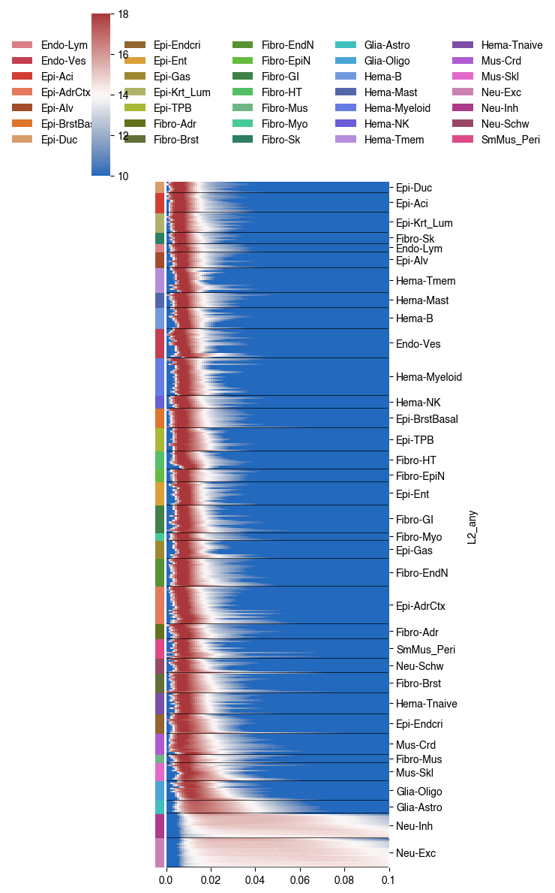
# chrom, start, end = 'chr1', 1800000, 3800000
# chrom, start, end = 'chr2', 0, 240000000
import cooler
chrom_size_path = f'{REF_ROOT}/hg38/fasta/hg38.main.chrom.sizes'
chrom_sizes = cooler.read_chromsizes(chrom_size_path, all_names=True)
chrom_sizes = chrom_sizes.iloc[:22]
rm_list = []
for bed_path in [f'{REF_ROOT}/hg38/fasta/hg38.altseq.bed', f'{REF_ROOT}/blacklist/hg38-blacklist.v2.bed.gz']:
bed = pd.read_csv(bed_path, sep='\t', header=None, index_col=None)
bed = {chrom:bed.loc[bed[0]==chrom, [1,2]].values for chrom in chrom_sizes.index}
rm_list.append(bed)
# L1_list = np.sort([xx.split('/')[-1].split('.')[0] for xx in glob(f'{indir}merged_allc/L1/CHN/c*.allc.tsv.gz')])
# # L1_list = L1_list[L1_list!='Hema-B']
# L2_list = np.sort([xx.split('/')[-1].split('.')[0] for xx in glob(f'{indir}merged_allc/L2any/*.CGN-Merge.allc.tsv.gz')])
# print(len(L1_list), len(L2_list))
L1_meta = pd.read_csv(f'{indir}L1color.tsv', sep='\t', header=0, index_col=0)
L1_meta = L1_meta.drop(['c35','c36'], axis=0)
nbins = 1000
reslist = pd.Index([10, 50, 100, 500, 1000, 5000, 10000, 50000])
context_list = pd.Index([f'C{xx}{yy}' for xx in 'ACGT' for yy in 'ACGT'])
def num2str(num):
if num>=1e6:
num_str = f'{int(num//1e6)}m'
elif num>=1e3:
num_str = f'{int(num//1e3)}k'
else:
num_str = f'{num}'
return num_str
def multires_ch(ct, allc_path):
bincount = np.zeros(len(reslist))
sum_x2, sum_x = np.zeros((2, len(reslist), len(context_list)))
sum_xy = np.zeros((len(reslist), len(context_list), len(context_list)))
result = np.zeros((len(reslist), len(context_list), nbins))
for chrom,start,end in zip(chunks['chrom'].values, chunks['start'].values, chunks['end'].values):
npos = (end - start) // reslist[-1] * reslist[-1]
data = []
# with gzip.open(allc_path, 'rt') as allc_lines:
with pysam.TabixFile(allc_path) as allc:
allc_lines = allc.fetch(chrom, start, end)
for line in allc_lines:
_, pos, _, context, mc, cov, *_ = line.split("\t")
data.append([pos, context, mc, cov])
data = pd.DataFrame(data, columns=['pos', 'context', 'mc', 'cov'])
data[['pos', 'mc', 'cov']] = data[['pos', 'mc', 'cov']].astype(int)
posfilter = np.ones(data.shape[0]).astype(bool)
for bed in rm_list:
bedtmp = bed[chrom][np.logical_and(bed[chrom][:,0]<end, bed[chrom][:,1]>start)]
for xx,yy in bedtmp:
posfilter[np.logical_and(data['pos']>=xx, data['pos']<=yy)] = False
data = data.loc[posfilter & ((data['pos']-start) < npos)]
data = data.groupby('context')
ratio_multires = {res:[] for res in reslist}
for k,context in enumerate(context_list):
if not context in data.groups.keys():
continue
df = data.get_group(context)
data_mc = csr_matrix((df['mc'], (np.zeros(df.shape[0]), df['pos']-start-1)), shape=[1, npos])
data_cov = csr_matrix((df['cov'], (np.zeros(df.shape[0]), df['pos']-start-1)), shape=[1, npos])
for i,res in enumerate(reslist):
tmp = data_mc.reshape((-1, res)).sum(axis=1).A1 / data_cov.reshape((-1, res)).sum(axis=1).A1
ratio_multires[res].append(tmp)
tmp = tmp[~np.isnan(tmp)]
tmp = np.histogram(tmp, bins=nbins, range=(0,1))[0]
result[i,k] += tmp
for i,res in enumerate(reslist):
if len(ratio_multires[res])==0:
continue
tmp = np.vstack(ratio_multires[res])
posfilter = (np.isnan(tmp).sum(axis=0)==0)
tmp = tmp[:, posfilter]
sum_xy[i] += tmp.dot(tmp.T)
sum_x2[i] += (tmp*tmp).sum(axis=1)
sum_x[i] += tmp.sum(axis=1)
bincount[i] += posfilter.sum()
# print(ct, chrom, start, end)
for i,res in enumerate(reslist):
sum_xy[i] /= bincount[i]
sum_x2[i] /= bincount[i]
sum_x[i] /= bincount[i]
corr = (sum_xy[i] - sum_x[i] * sum_x[i][:, None]) / np.sqrt((sum_x2[i] - sum_x[i] ** 2) * (sum_x2[i] - sum_x[i] ** 2)[:, None])
np.save(f'mCH_distribution/multires/{ct}_corr_{num2str(res)}.npy', corr)
np.save(f'mCH_distribution/multires/{ct}_hist.npy', result)
return result
chunks = cooler.util.binnify(chrom_sizes, 10000000)
# ct = 'Epi-TPB'
# allc_path = '/large_storage/zhoulab/project/seqmodel/data/ENTEx_mC_L1_hg38/allc/Epi-TPB.allc.tsv.gz'
from concurrent.futures import ProcessPoolExecutor, as_completed
cpu = 36
with ProcessPoolExecutor(cpu) as executor:
futures = {}
for ct in L1_meta.index:
allc_path = f'{indir}merged_allc/L1/CHN/{ct}.allc.tsv.gz'
future = executor.submit(
multires_ch,
ct=ct,
allc_path=allc_path,
)
futures[future] = ct
result = {}
for future in as_completed(futures):
ct = futures[future]
result[ct] = future.result()
print(f'{ct} finished')
## plot cell type by resolution context correlation matrices
# fig, axes = plt.subplots(len(L1_list), 7, figsize=(21,3*len(L1_list)), dpi=300, sharex='row', sharey='row')
# for k,ct in enumerate(L1_list):
# # if k>1:
# # break
# res = reslist[-1]
# corr = np.load(f'mCH_distribution/multires/{ct}_corr_{num2str(res)}.npy')
# cg = sns.clustermap(corr, figsize=(0.1,0.1), metric='cosine', vmin=0, vmax=1, cmap='cividis')
# rorder = cg.dendrogram_row.reordered_ind.copy()
# corder = cg.dendrogram_col.reordered_ind.copy()
# for i,res in enumerate(reslist[1:]):
# corr = np.load(f'mCH_distribution/multires/{ct}_corr_{num2str(res)}.npy')
# # if np.isnan(corr).sum()==0:
# # corr = pd.DataFrame(corr, index=context_list, columns=context_list)
# ax = axes[k,i]
# ax.imshow(corr[rorder][:, rorder], cmap='vlag', vmin=0, vmax=1)
# ax.set_xticks(np.arange(corr.shape[0]))
# ax.set_xticklabels(context_list[rorder], rotation=90)
# ax.set_yticks(np.arange(corr.shape[0]))
# ax.set_yticklabels(context_list[rorder])
# if (k==0):
# if (i==3):
# ax.set_title(f'{res}\n{ct}')
# else:
# ax.set_title(res)
# elif (i==3):
# ax.set_title(ct)
# print(ct)
# fig.tight_layout()
# fig.savefig(f'mCH_distribution/L1_mCcontext_corr.pdf', transparent=True)
context_group = [['CGA','CGC','CGG', 'CGT'],
['CAA', 'CAC', 'CAG', 'CAT', 'CTC'],
['CTA', 'CTG', 'CTT'],
['CCA', 'CCC', 'CCG', 'CCT']
]
context_group = {xx:i for i,yy in enumerate(context_group) for xx in yy}
context_group = pd.Series(context_group)
col_palette = {xx:yy for xx,yy in zip(np.arange(4), sns.color_palette('hls', 4))}
reorder = pd.Series(np.arange(16), index=context_list)
reorder = reorder.loc[context_group.index]
context_list = context_list[reorder]
corr = []
for ct in L1_meta.index:
tmp = np.load(f'mCH_distribution/multires/{ct}_corr_{num2str(reslist[-1])}.npy')[reorder][:, reorder]
tmp = np.triu(tmp, k=1).flatten()
corr.append(tmp)
corr = pd.DataFrame(corr, index=L1_meta['L1_abbr'],
columns=[f'{xx}-{yy}' for xx in context_list for yy in context_list])
corr = corr.loc[:, (np.std(corr, axis=0)>1e-10)]
from scipy.cluster.hierarchy import fcluster, linkage
nc = 6
Z = linkage(corr, method='average', metric='cosine')
label = fcluster(Z, nc, criterion='maxclust')
label = pd.Series(label-1, index=corr.index)
row_palette = {xx:yy for xx,yy in zip(np.arange(nc), sns.color_palette('tab10', nc))}
row_colors = label.map(row_palette)
col_colors = [corr.columns.str.split('-').str[0].map(context_group).map(col_palette),
corr.columns.str.split('-').str[1].map(context_group).map(col_palette)
]
cg = sns.clustermap(corr, metric='cosine', cmap='vlag',
row_colors=row_colors, col_colors=col_colors)
rorder = cg.dendrogram_row.reordered_ind.copy()
corder = cg.dendrogram_col.reordered_ind.copy()
# cg.savefig(f'mCH_distribution/L1_mCcontext_corr_res50k_clustermap.pdf', transparent=True)
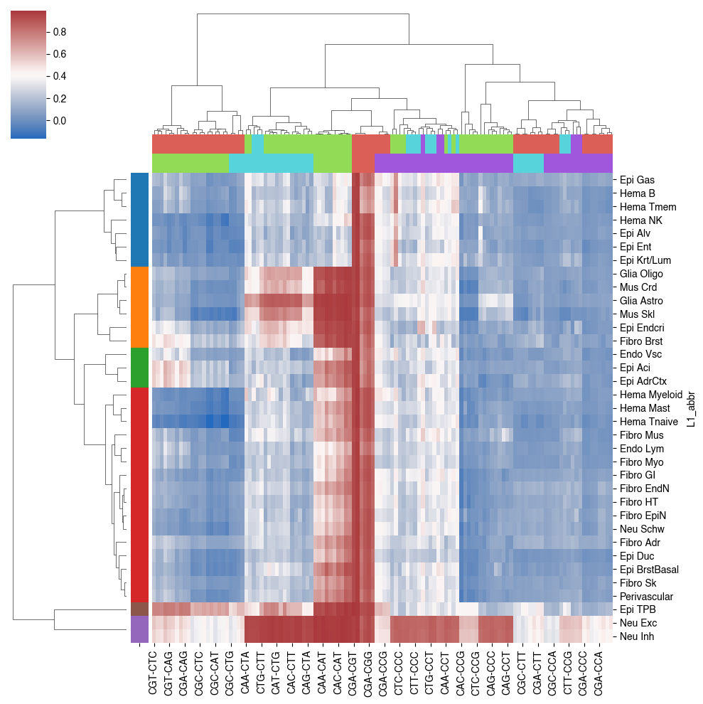
corder = [['CGT-CTC', 'CGA-CTC', ## CGW CAN/CTC 2x5
'CGT-CAA', 'CGT-CAC', 'CGT-CAG', 'CGT-CAT', 'CGA-CAA', 'CGA-CAC',
'CGA-CAG', 'CGA-CAT'],
['CGC-CTC', 'CGG-CTC', ## CGS CAN/CTC 2x5
'CGC-CAA', 'CGG-CAA', 'CGC-CAG', 'CGG-CAG', 'CGC-CAT', 'CGG-CAT',
'CGC-CAC', 'CGG-CAC'],
['CGC-CTG', 'CGG-CTG', 'CGA-CTG', 'CGT-CTG'], ## CGN CTG 4x1
['CTA-CTG', 'CTA-CTT', 'CTG-CTT'], ## CTD 3x2/2
['CAA-CTA', 'CTC-CTA', 'CAC-CTG', 'CAA-CTG', 'CAG-CTG', 'CAT-CTG', ## CAN/CTC CTD 5x3
'CAA-CTT', 'CTC-CTG', 'CTC-CTT', 'CAC-CTT', 'CAG-CTT', 'CAT-CTT',
'CAC-CTA', 'CAG-CTA', 'CAT-CTA'],
['CAA-CAG', 'CAA-CAC', 'CAA-CAT', 'CAG-CTC', 'CAT-CTC', 'CAA-CTC', ## CAN/CTC 5x4/2
'CAC-CAT', 'CAG-CAT', 'CAC-CAG', 'CAC-CTC'],
['CGA-CGT', 'CGC-CGG', 'CGC-CGT', 'CGA-CGC', 'CGA-CGG', 'CGG-CGT'], ## CGN 4x3/2
['CGC-CCG', 'CGG-CCG', 'CGA-CCG', 'CGT-CCG'], ## CGN CCG 4x1
['CTG-CCC', 'CTA-CCC', 'CTT-CCC', 'CTT-CCA', 'CTG-CCA', 'CTG-CCT', ## CTD CCH 3x3
'CTT-CCT', 'CTA-CCT', 'CTA-CCA'],
['CCA-CCT', 'CCA-CCC', 'CCC-CCT'], ## CCH 3x2/2
['CTC-CCA', 'CTC-CCT', 'CTC-CCC', 'CAA-CCC', 'CAA-CCT', 'CAA-CCA'], ## CAA/CTC CCH 2x3
['CAC-CCA','CAC-CCT', 'CAC-CCC', 'CAG-CCC', 'CAT-CCC', 'CAT-CCA',
'CAG-CCA', 'CAG-CCT', 'CAT-CCT'], ## CAB CCH 3x3
['CAC-CCG', 'CAA-CCG', 'CAG-CCG', 'CAT-CCG', 'CTC-CCG'], ## CAN/CTC CCG 5x1
['CTA-CCG', 'CTG-CCG', 'CTT-CCG'], ## CTD CCG 3x1
['CCC-CCG', 'CCA-CCG', 'CCG-CCT'], ## CCH CCG 3x1
['CGC-CTA', 'CGG-CTA', 'CGC-CTT', 'CGG-CTT', 'CGA-CTA', 'CGT-CTA',
'CGA-CTT', 'CGT-CTT'], ## CGN CTW 4x2
['CGC-CCT', 'CGG-CCT', 'CGC-CCA', 'CGG-CCA', 'CGA-CCC', 'CGT-CCC', ## CGN CCH 4x3
'CGC-CCC', 'CGG-CCC', 'CGA-CCA', 'CGT-CCA', 'CGA-CCT', 'CGT-CCT']
]
xticklabels = ['CGW CAN/CTC', 'CGS CAN/CTC', 'CGN CTG', 'CTD', 'CAN/CTC CTD', 'CAN/CTC',
'CGN', 'CGN CCG', 'CTD CCH', 'CCH', 'CAA/CTC CCH', 'CAB CCH',
'CAN/CTC CCG', 'CTD CCG', 'CCH CCG', 'CGN CTW', 'CGN CCH']
corr = corr[np.concatenate(corder)].iloc[:, ::-1]
row_colors = label.map(row_palette)
col_colors = [corr.columns.str.split('-').str[0].map(context_group).map(col_palette),
corr.columns.str.split('-').str[1].map(context_group).map(col_palette)
]
cg = sns.clustermap(corr, metric='cosine', cmap='vlag', col_cluster=False,
row_colors=row_colors, col_colors=col_colors)
rorder = cg.dendrogram_row.reordered_ind.copy()
# corder = cg.dendrogram_col.reordered_ind.copy()
# cg.savefig(f'mCH_distribution/L1_mCcontext_corr_res50k_clustermap.pdf', transparent=True)
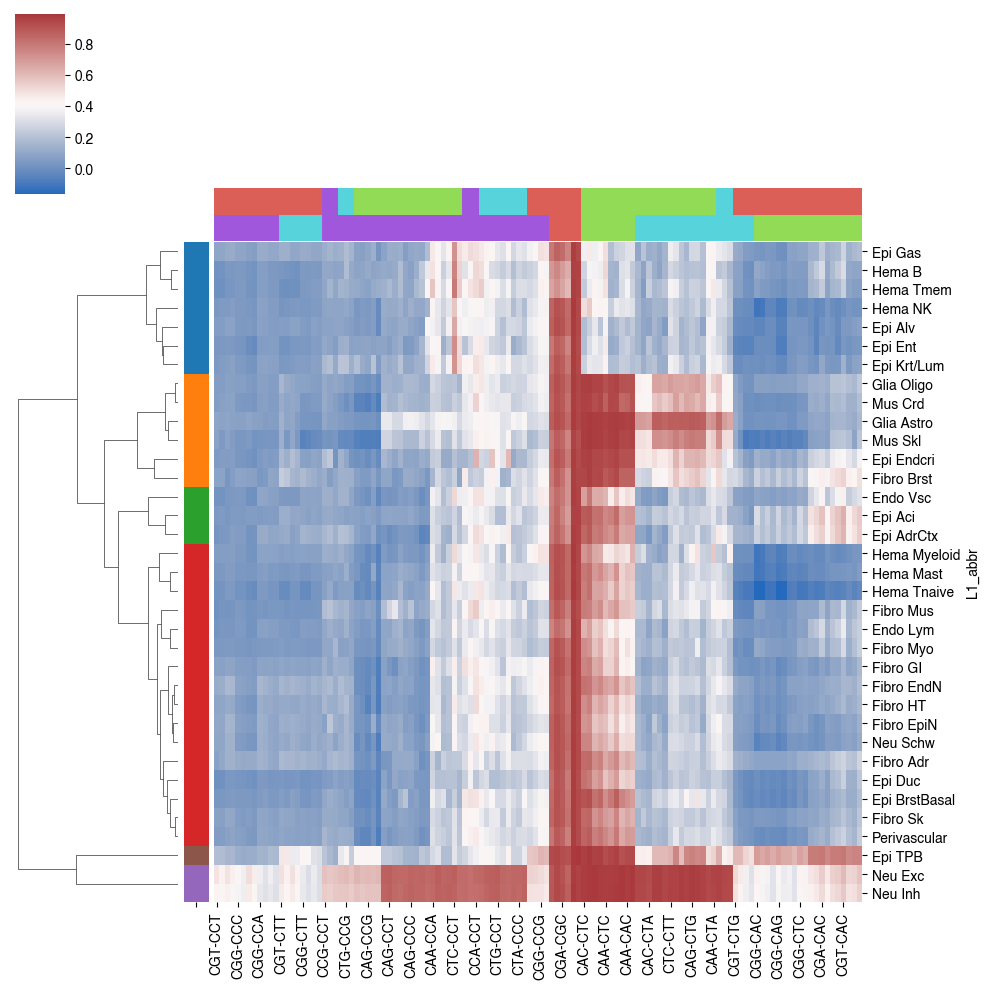
fig, ax = plt.subplots(figsize=(4,3.5), dpi=300)
tmp = corr.iloc[rorder]
# cg = sns.clustermap(corr, metric='cosine', row_cluster=)
ax.imshow(tmp, cmap='vlag', vmin=0, vmax=1, aspect='auto')
# ax.set_xticks([])
# xticks = np.arange(0, corr.shape[1], 1)
# ax.set_xticks(xticks)
# ax.set_xticklabels(tmp.columns[xticks], rotation=90, fontsize=6)
corder_offset = [0] + [len(xx) for xx in corder[::-1]]
corder_offset = np.cumsum(corder_offset)
ax.set_xticks((corder_offset[:-1] + corder_offset[1:] - 1) / 2)
ax.set_xticklabels(xticklabels[::-1], rotation=90, fontsize=6)
for xx in corder_offset[1:]:
ax.plot([xx-0.5, xx-0.5], [-0.5, corr.shape[0]-0.5], 'k')
ax.set_yticks(np.arange(corr.shape[0]))
ax.set_yticklabels(tmp.index, fontsize=6)
fig.tight_layout()
fig.savefig(f'mCH_distribution/L1_mCcontext_corr_res50k_grouped.pdf', transparent=True)

fig, axes = plt.subplots(2, 4, figsize=(16,10), dpi=300, sharex='all', sharey='all')
for i,res in enumerate(reslist[1:]):
corr = []
for ct in L1_meta.index:
tmp = np.load(f'mCH_distribution/multires/{ct}_corr_{num2str(res)}.npy')[reorder][:, reorder]
tmp = np.triu(tmp).flatten()
corr.append(tmp)
corr = pd.DataFrame(corr, index=L1_meta['L1_abbr'],
columns=[f'{xx}-{yy}' for xx in context_list for yy in context_list])
corr = corr[np.concatenate(corder)].iloc[rorder, ::-1]
# corr = corr.loc[:, (np.std(corr, axis=0)>0)]
# corr = corr.iloc[rorder, corder]
# cg = sns.clustermap(corr, metric='cosine', row_cluster=)
ax = axes.flatten()[i]
ax.imshow(corr, cmap='vlag', vmin=0, vmax=1, aspect='auto', rasterized=True)
xticks = np.arange(0, corr.shape[1], 4)
ax.set_xticks(xticks)
ax.set_xticklabels(corr.columns[xticks], rotation=90)
ax.set_yticks(np.arange(corr.shape[0]))
ax.set_yticklabels(corr.index)
ax.set_title(num2str(res))
# corr.to_csv(f'mCH_distribution/L1_{num2str(res)}_mCHcontext_corr.tsv.gz', sep='\t', compression='gzip')
for ax in axes.flatten()[(len(reslist)-1):]:
ax.axis('off')
fig.tight_layout()
fig.savefig(f'mCH_distribution/L1_mCcontext_corr_resall.pdf', transparent=True)

rorder = corr.index[rorder]
rorder = rorder[rorder.isin(expr.columns)]
rorder
Index(['Epi Gas', 'Hema B', 'Hema Tmem', 'Hema NK', 'Epi Alv', 'Epi Ent',
'Epi Krt/Lum', 'Glia Oligo', 'Mus Crd', 'Glia Astro', 'Mus Skl',
'Epi Endcri', 'Fibro Brst', 'Endo Vsc', 'Epi Aci', 'Epi AdrCtx',
'Hema Myeloid', 'Hema Mast', 'Hema Tnaive', 'Fibro Mus', 'Endo Lym',
'Fibro Myo', 'Fibro GI', 'Fibro HT', 'Neu Schw', 'Fibro Adr', 'Epi Duc',
'Epi BrstBasal', 'Fibro Sk', 'Perivascular', 'Epi TPB', 'Neu Exc',
'Neu Inh'],
dtype='object', name='L1_abbr')
gene_list = pd.Index(['DNMT1', 'DNMT3A', 'DNMT3B', 'DNMT3L', 'TET1', 'TET2', 'TET3', 'MECP2'])
tmp = expr.loc[gene_list.map(gene2ens), rorder].T
tmp.columns = gene_list
# expr.loc[pd.Index(['MKI67', 'MECP2']).map(gene2ens)].T.sort_values(by=gene2ens['MKI67'])
| ENSG00000148773 | ENSG00000169057 | |
|---|---|---|
| Glia Oligo | 0.000000 | 4.084800 |
| Glia Astro | 0.000000 | 3.909978 |
| Fibro Sk | 0.000000 | 0.000000 |
| Mus Skl | 0.000000 | 0.000000 |
| Fibro Mus | 0.000000 | 0.000000 |
| Neu Exc | 0.025779 | 3.726631 |
| Neu Inh | 0.033940 | 3.853428 |
| Epi BrstBasal | 0.094635 | 3.951848 |
| Mus Crd | 0.235423 | 5.071039 |
| Fibro Brst | 0.255602 | 4.483278 |
| Fibro HT | 0.471807 | 5.061506 |
| Epi Aci | 0.484369 | 4.423770 |
| Epi AdrCtx | 0.532674 | 4.487154 |
| Epi Endcri | 0.552820 | 4.615109 |
| Perivascular | 0.612850 | 4.816367 |
| Fibro Myo | 0.666318 | 3.082583 |
| Epi Duc | 0.701626 | 4.783900 |
| Endo Vsc | 0.768363 | 4.661057 |
| Neu Schw | 0.964160 | 4.504500 |
| Fibro Adr | 0.982481 | 4.961387 |
| Hema Tnaive | 1.085657 | 3.974897 |
| Hema Mast | 1.135399 | 4.938932 |
| Epi Alv | 1.246431 | 4.274445 |
| Fibro GI | 1.308829 | 3.925933 |
| Endo Lym | 1.702469 | 4.144449 |
| Epi TPB | 1.959691 | 3.591075 |
| Epi Krt/Lum | 2.186711 | 3.144146 |
| Hema Myeloid | 2.215862 | 4.237477 |
| Hema B | 2.363608 | 4.800878 |
| Hema Tmem | 2.840582 | 4.688213 |
| Epi Gas | 3.051971 | 3.181086 |
| Hema NK | 3.431730 | 4.720770 |
| Epi Ent | 3.622835 | 4.447084 |
from scipy.stats import ranksums
for k in gene_list:
for i in range(4):
xx = tmp.loc[tmp.index.map(label)==i, k]
for j in range(i+1,5):
yy = tmp.loc[tmp.index.map(label)==j, k]
s, p = ranksums(xx, yy)
if p<0.05:
print(k, i, j, s, p)
DNMT1 0 1 2.5714285714285716 0.01012799054939065
DNMT1 1 3 -2.309401076758503 0.02092133533779403
DNMT3A 0 1 -2.0 0.04550026389635839
DNMT3A 0 3 -2.834978968421365 0.0045828702593285866
DNMT3A 0 4 -2.04939015319192 0.04042397933690852
DNMT3L 0 4 -2.04939015319192 0.04042397933690852
from scipy.stats import ranksums
for k in gene_list:
for i in range(5):
xx = tmp.loc[tmp.index.map(label)==i, k]
yy = tmp.loc[tmp.index.map(label)!=i, k]
s, p = ranksums(xx, yy)
if p<0.05:
print(k, i, s, p)
DNMT1 1 -2.3804761428476167 0.017290280592906253
DNMT3A 0 -3.126610767803046 0.0017683387540660498
fig, axes = plt.subplots(2, 4, figsize=(8,4), dpi=300, sharex='all')
for i,xx in enumerate(gene_list):
ax = axes.flatten()[i]
sns.stripplot(x=label.loc[label.index.isin(tmp.index)], y=tmp[xx], hue=tmp.index,
s=4, edgecolor='none', palette=colors, ax=ax, legend=False)
ax.set_title(xx)
ax.set_xlabel('MajorType Group')
if i%4==0:
ax.set_ylabel('Expr')
else:
ax.set_ylabel('')
fig.tight_layout()
fig.savefig('mCH_distribution/mCH_group_DNMT_expr.pdf', transparent=True)

corr = [[np.load(f'mCH_distribution/multires/{ct.replace(" ","-").replace("/","_")}_corr_{num2str(res)}.npy').flatten() for res in reslist[1:]] for ct in L1_list]
corr = np.array(corr).reshape((len(corr), -1))
corr = pd.DataFrame(corr, index=L1_meta['L1_abbr'], columns=reslist[1:])
fig, axes = plt.subplots(6, 7, figsize=(21,18), sharex='row', sharey='row', dpi=300)
for i, ctgroup in label.index.groupby(label).items():
corr = np.zeros((len(reslist)-1, len(context_list), len(context_list)))
for ct in ctgroup:
ctname = ct.replace(' ','-').replace('/','_')
for k,res in enumerate(reslist[1:]):
corr[k] += np.load(f'mCH_distribution/multires/{ctname}_corr_{num2str(res)}.npy')
corr /= len(ctgroup)
cg = sns.clustermap(corr[-1], figsize=(0.1,0.1), metric='cosine', vmin=0, vmax=1, cmap='cividis')
rorder = cg.dendrogram_row.reordered_ind.copy()
corder = cg.dendrogram_col.reordered_ind.copy()
for k,res in enumerate(reslist[1:]):
ax = axes[i-1,k]
ax.imshow(corr[k][rorder][:, rorder], cmap='vlag', vmin=0, vmax=1)
ax.set_xticks(np.arange(len(context_list)))
ax.set_xticklabels(context_list[rorder], rotation=90)
ax.set_yticks(np.arange(len(context_list)))
ax.set_yticklabels(context_list[rorder])
if (i==1):
if (k==3):
ax.set_title(f'{res}\nGroup{i}')
else:
ax.set_title(res)
elif (k==3):
ax.set_title(f'Group{i}')
fig.tight_layout()
fig.savefig(f'mCH_distribution/L1group_mCcontext_corr.pdf', transparent=True)


for k in range(len(context_list)):
fig, axes = plt.subplots(2, 4, figsize=(8,3), dpi=300, sharex='all')
for i in range(8):
ax = axes.flatten()[i]
ax.bar(np.arange(100), result[i,k], width=1, color='C0')
ax.set_title(reslist[i])
plt.tight_layout()
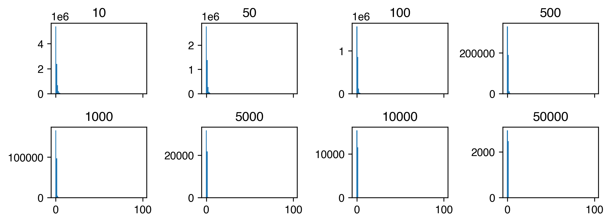
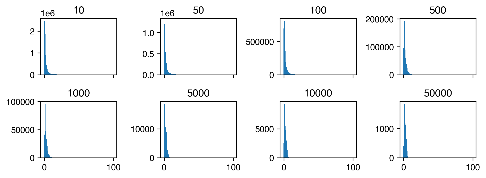
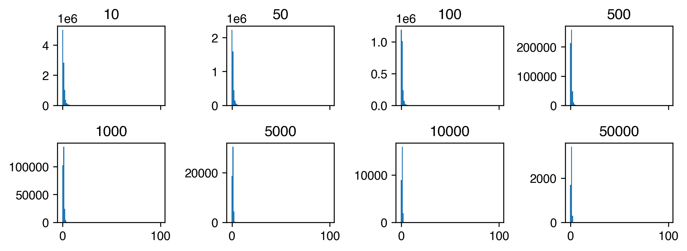
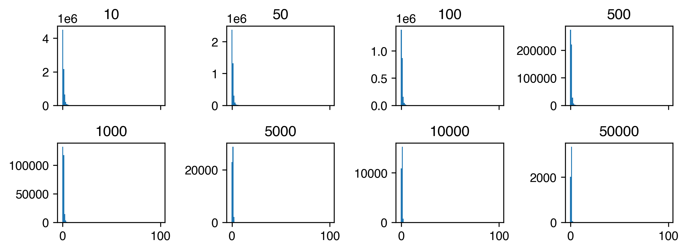
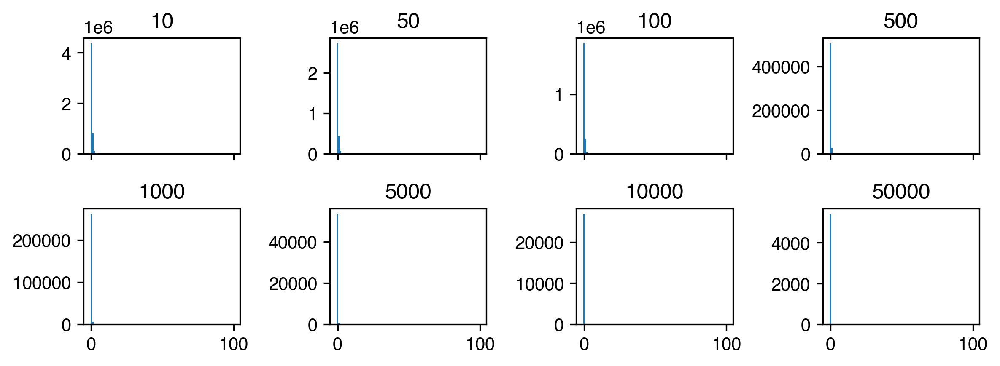
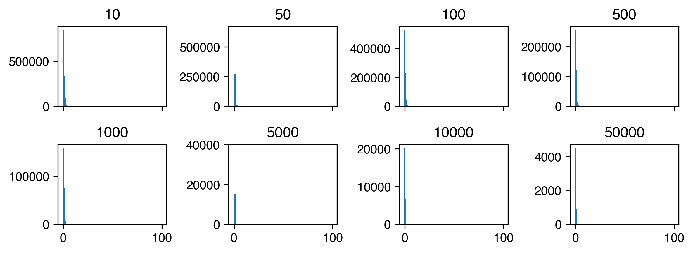
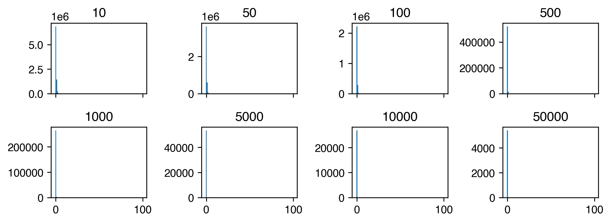
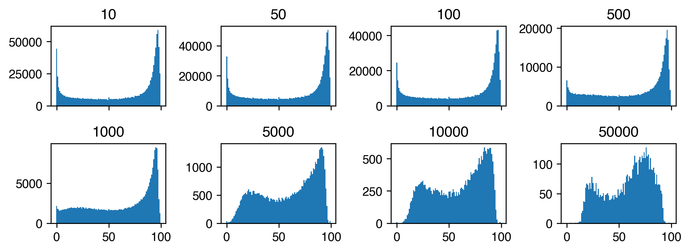
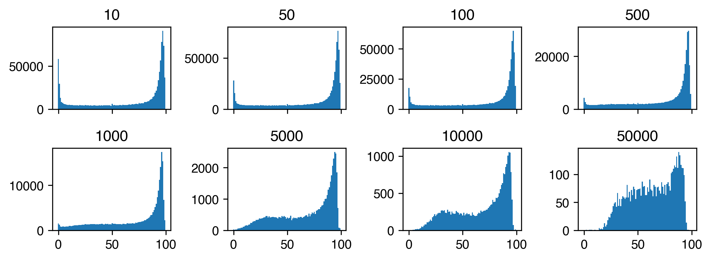
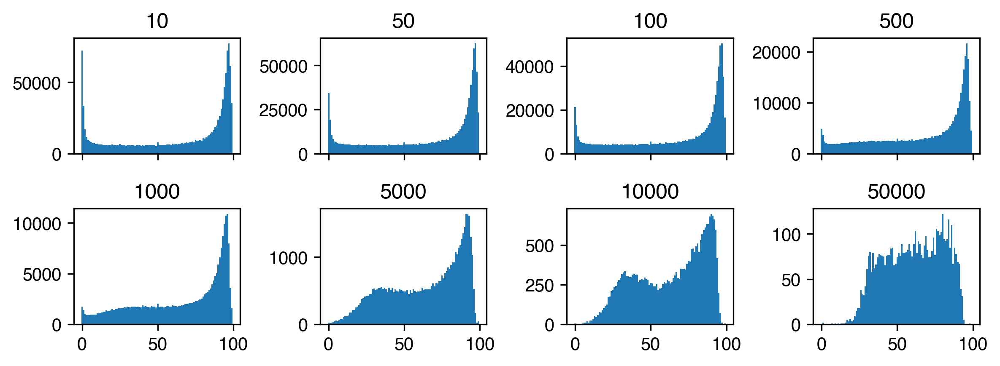
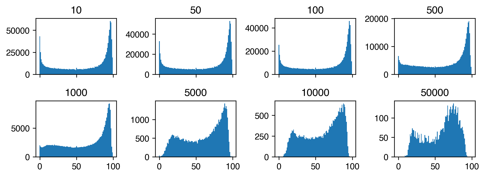
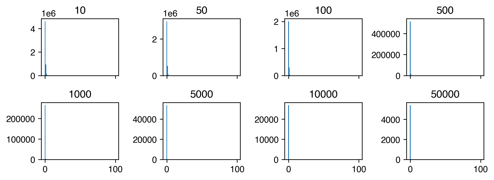
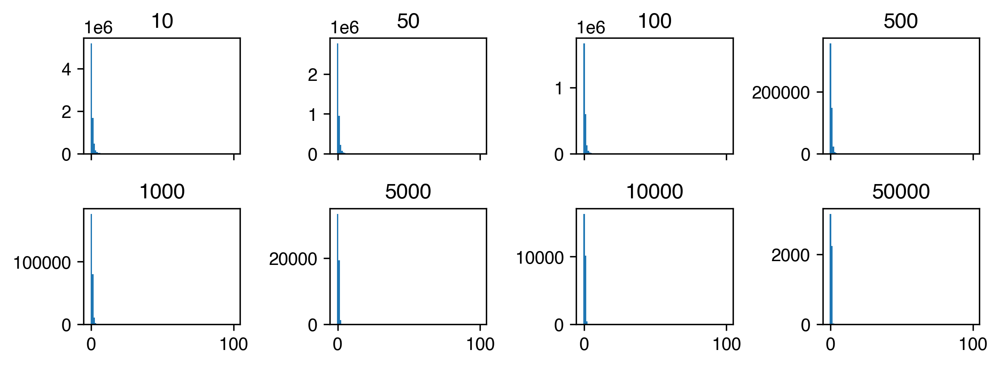